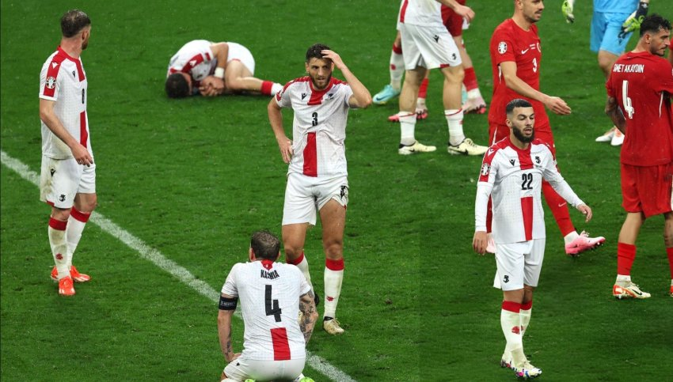
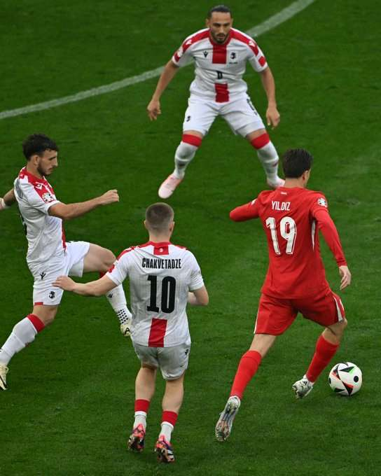
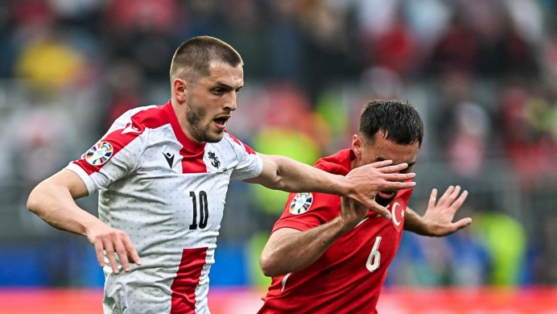

საქართველო თურქეთი



ევროპის ჩემპიონატზე საქართველოს საფეხბურთო ნაკრების პირველი მატჩი თურქეთთან დაიწყო. შეხვედრა დორტმუნდში, „სიგნალ იდუნა პარკზე“ მიმდინარეობს.შესრულდა საქართველოსა და თურქეთის ჰიმნები. საქართველოს ეროვნული საფეხბურთო ნაკრები ევროპის ჩემპიონატზე ისტორიაში პირველად თამაშობს. EURO 2024-ის მატჩების ღია ჩვენებები საქართველოს ყველა ქალაქში დიდ ეკრანებზეა შესაძლებელი. ამასთან, როგორც ცნობილია, მიხეილ მესხის სტადიონზე საქართველოს ეროვნული ნაკრების ყველა თამაშს აჩვენებენ. 22 ივნისს საქართველოს ნაკრები ჰამბურგში ჩეხეთს დაუპირისპირდება, ხოლო 26 ივნისს, გელზენკირხენში, პორტუგალიის ეროვნულ ნაკრებს.